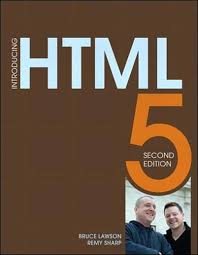
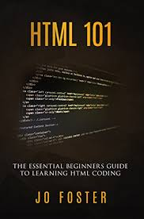

Book Name: Master HTML edition 2000
Author: Mikhel William
Publication: Person Education
500 RS/-

Book Name: Master HTML edition 2006
Author: Mikhel William
Publication: Person Education
999 RS/-
n 1980, physicist Tim Berners-Lee, a contractor at CERN, proposed and prototyped ENQUIRE, a system for CERN researchers to use and share documents. In 1989, Berners-Lee wrote a memo proposing an Internet-based hypertext system.[3] Berners-Lee specified HTML and wrote the browser and server software in late 1990. That year, Berners-Lee and CERN data systems engineer Robert Cailliau collaborated on a joint request for funding, but the project was not formally adopted by CERN. In his personal notes[4] from 1990 he listed[5] "some of the many areas in which hypertext is used" and put an encyclopedia first. The first publicly available description of HTML was a document called "HTML Tags", first mentioned on the Internet by Tim Berners-Lee in late 1991.[6][7] It describes 18 elements comprising the initial, relatively simple design of HTML. Except for the hyperlink tag, these were strongly influenced by SGMLguid, an in-house Standard Generalized Markup Language (SGML)-based documentation format at CERN. Eleven of these elements still exist in HTML 4.[8] HTML is a markup language that web browsers use to interpret and compose text, images, and other material into visual or audible web pages. Default characteristics for every item of HTML markup are defined in the browser, and these characteristics can be altered or enhanced by the web page designer's additional use of CSS. Many of the text elements are found in the 1988 ISO technical report TR 9537 Techniques for using SGML, which in turn covers the features of early text formatting languages such as that used by the RUNOFF command developed in the early 1960s for the CTSS (Compatible Time-Sharing System) operating system: these formatting commands were derived from the commands used by typesetters to manually format documents. However, the SGML concept of generalized markup is based on elements (nested annotated ranges with attributes) rather than merely print effects, with also the separation of structure and markup; HTML has been progressively moved in this direction with CSS.
| IMAGE | Description | Prise | Add to cart image |
|---|---|---|---|
|  | Book Name: Master HTML edition 2000 |
500 RS/- |
|
|  | Book Name: Master HTML edition 2006 |
999 RS/- |
|